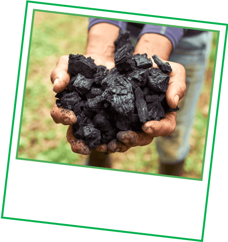

ทุก 1 หรือ 2 บาทจากการนั่ง Grab หรือสั่งอาหารของคุณ จะ
นำไปสนับสนุนโครงการดีๆ เพื่อ ช่วยโลกใบนี้ไปด้วยกัน
หากคุณเข้าร่วมโครงการเพื่อสิ่งแวดล้อมกับเรา สิ่งต่างๆ เหล่านี้จะเกิดขึ้น:
จากเงินเพียงเล็กน้อย สู่การเปลี่ยนแปลงที่ยิ่งใหญ่ให้กับโลกของเรา
มีเวลาสัก 2 นาทีไหม ?
ลองปัดหน้าจอเพื่อ เรียนรู้ข้อมูลเพิ่มเติม (ว่าคุณกำลังช่วยโล
กอย่างไร)

การสนับสนุนของคุณต่อโครงการ
Biochar Life
จะช่วยแก้ไขปัญหาเรื่อง มลพิษทางอากาศในประเทศไทย ด้วย
การเปลี่ยนเศษวัสดุการเกษตรให้กลาย เป็น "ไบโอชาร์"
ถ่านที่สามารถกักเก็บ คาร์บอน ช่วยบำรุงดิน และช่วยเหลือ
เกษตรกรท้องถิ่นไปพร้อม ๆ กัน
นอกจากนี้ คุณยังได้สนับสนุนอีกหนึ่ง โครงการท้องถิ่นอย่าง
วงษ์ไผ่ไบโอชาร์ ที่นำเศษไม้ไผ่มาใช้แทนด้วยนะ
คุณรู้ไหม?
ปีที่แล้ว คนกรุงเทพฯ ต้องหายใจเอาอากาศที่ไม่ปลอดภัยเข้าร่างกายไปมากกว่า 200 วัน

ไบโอชาร์ ยังสามารถช่วยกักเก็บ
คาร์บอนที่เป็นอันตรายเวลาที่เกษตรกร
เผาถ่านได้อีกด้วย (สู้เค้า ไบโอชาร์!)
โครงการ GrabForGood Forest
ของเราจึง ขอลุกขึ้นสู้ ด้วยการปลูกต้นไม้เพิ่มในอำเภอ เกาะลันตา
จังหวัดกระบี่
ซึ่งต้นไม้เหล่านี้มีบทบาทสำคัญในการฟื้นฟู ความหลากหลายทางชีวภาพ
และการสนับสนุน ของคุณ ช่วยให้เราร่วมมือกับ
EcoMatcher และ Conserve Natural Forest
ในการปลูก ต้นไม้ให้ได้มากขึ้น!
คุณรู้ไหม?
ในทุกๆ นาที เรากำลัง สูญเสียป่าพื้นที่ขนาด เท่าสนามฟุตบอล 10 สนาม
ต้นพะยูงไทย คือต้นไม้ล้ำค่าที่มักถูก
ลักลอบตัดไม้ และกำลังตกอยู่ในภาวะ
ใกล้สูญพันธุ์
และยังไม่หมดแค่นั้น คุณยังได้ช่วยสร้างการเปลี่ยนแปลง ในจุดที่ ห่างออกไปกว่า 700 กิโลเมตรอีกด้วย
โครงการเพื่อสิ่งแวดล้อมของเราได้สนับสนุน การทำงานของ Wildlife
Conservation Society ที่คอยปกป้อง
เขตอนุรักษ์พันธุ์ สัตว์ป่า Keo Seima
ในกัมพูชา ซึ่งเป็นบ้าน ของสัตว์ใกล้สูญพันธุ์กว่า 80 ชนิด จากภัย
ของการตัดไม้ทำลายป่า
ลองทายสิว่า เราได้ปลูกต้นไม้กันไป แล้วทั้งหมดกี่ต้น?
เชื่อหรือยังว่าเงินเพียงเล็กน้อย ก็ สามารถเป็นส่วนหนึ่งของการ
เปลี่ยนแปลงที่ยิ่งใหญ่ได้จริง! ถ้ายังไม่ ได้เข้าร่วมโครงการกับเรา
สามารถกด
ที่ นี่เพื่อเข้าร่วมโครงการเพื่อสิ่งแวดล้อม ได้ทันที
คำถาม:
ตั้งแต่ปี 2021 เป็นต้นมา ผู้ใช้ Grab อย่างคุณได้ร่วม
สนับสนุนการอนุรักษ์ป่าไม้ทั่วเอเชียตะวันออกเฉียงใต้
1.2 ล้านต้น
ที่มา:
Save the Children International
World Resources Institute